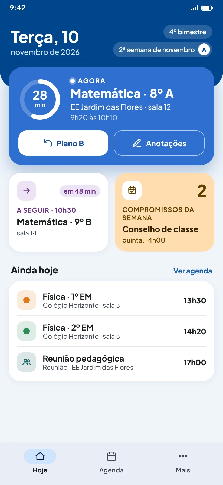
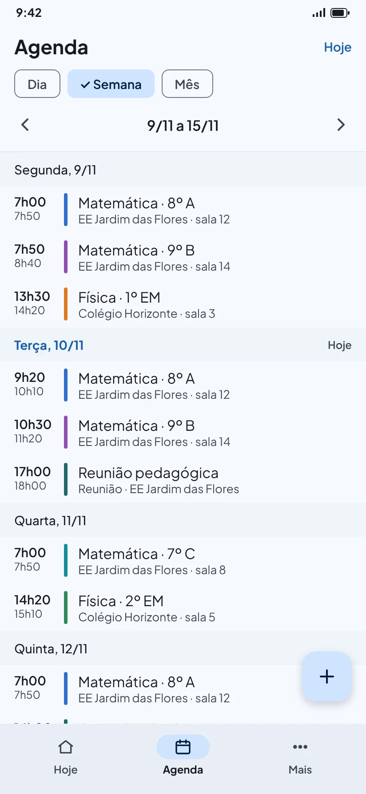
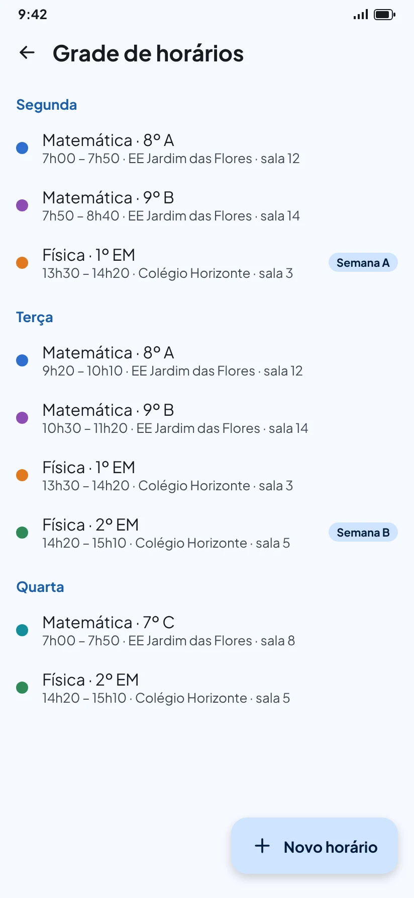
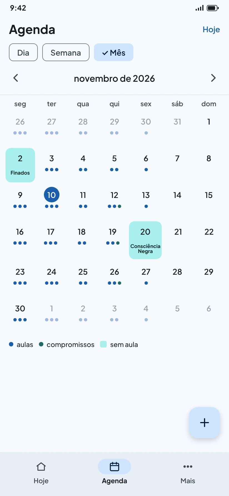
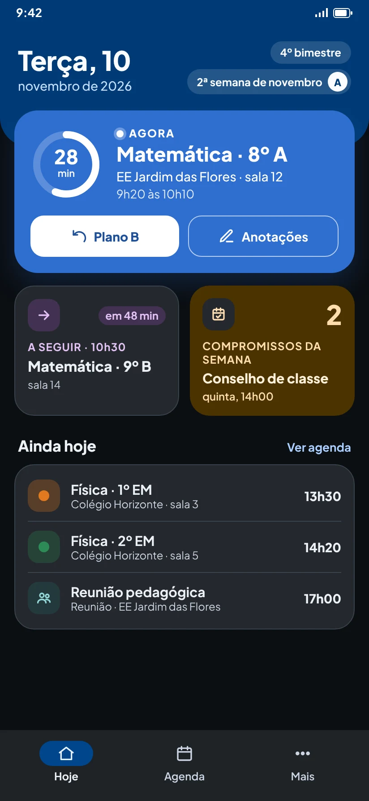

Sua rotina de aulas, organizada num só lugar
O Agenda Docente junta horários, turmas e compromissos de todas as escolas onde você trabalha, do berçário à universidade. Abra o app e veja na hora onde você precisa estar.
- Funciona sem internet
- Sem conta
- Sem anúncios
- Gratuito

O que o app faz
Feito para quem dá aula em mais de um lugar, com grades que mudam de semana para semana e calendários cheios de feriados, recessos e conselhos de classe.
A aula de agora
A tela Hoje mostra a aula em andamento, quanto falta para acabar e o que vem depois.
Várias escolas
Cada local de trabalho tem sua cor; as turmas e os horários ficam ligados a ele.
Semana A e B
Para escolas com grade que alterna: cada horário vale toda semana, só na A ou só na B.
Ano letivo de verdade
Bimestres, trimestres ou semestres, feriados nacionais em um toque, recessos e férias.
Imprevistos
Cancele ou remarque uma aula só naquele dia, sem mexer na grade, e desfaça quando quiser.
Seus dados com você
Tudo fica guardado só no celular. O app nem tem permissão para usar a internet.
Primeiros passos
Na primeira vez, a tela Hoje mostra um guia com estes três passos. Depois de cadastrar a grade, ela passa a mostrar onde você precisa estar. Leva uns dez minutos.
-
Cadastre onde você trabalha
Em Mais → Locais de trabalho, toque em Novo local e informe o nome da escola, rede ou campus. Escolha uma cor: ela identifica o local em todo o app.
-
Cadastre suas turmas
Em Mais → Turmas, crie cada turma ligada ao seu local, como “8º A” ou “Cálculo I”. Ela usa a cor do local ou uma cor própria. Turma que terminou pode ser arquivada: some da agenda, sem perder nada.
-
Monte a grade de horários
Em Mais → Grade de horários, toque em Novo horário, escolha a turma, o horário e marque todos os dias da semana em que essa aula acontece. O app cria tudo de uma vez e avisa se um horário cruzar com outro.
A tela Hoje
É a primeira tela do app, pensada para ser lida num relance, entre uma aula e outra.
- No topo: a data, a etapa do ano (como “4º bimestre”) e a semana do mês. Com a semana A/B ligada, aparece também a letra da semana.
- Cartão grande: na cor da turma, mostra a aula de agora, com um anel de tempo e os minutos que faltam. Fora do horário de aula, mostra a próxima; no fim do dia, o que vem amanhã.
- A seguir e Compromissos da semana: o próximo horário do dia e as reuniões e conselhos até domingo.
- Ainda hoje: tudo o que falta no dia. Toque em Ver agenda para o dia completo.
Toque numa aula para cancelar só neste dia ou remarcar para outra data ou horário.

A agenda
Na aba Agenda, escolha ver por Dia, Semana ou Mês e use as setas para avançar ou voltar. O botão Hoje, no canto, traz de volta para a data atual.
- Tocar numa aula abre as opções: cancelar só neste dia, remarcar esta aula ou desfazer um cancelamento ou remarcação. A grade continua igual nas outras semanas.
- Botão +: adiciona, na data que está aberta, um compromisso, uma aula extra ou um dia sem aula.
- Aulas canceladas e remarcadas continuam aparecendo, mais apagadas, para você poder desfazer.
Compromissos
Reuniões, conselhos de classe, formações, atendimentos, eventos ou compromissos pessoais. Podem durar o dia inteiro ou ter horário, e se repetir toda semana, a cada 15 dias, todo mês ou todo ano, com ou sem data final.
Grade de horários e semana A/B
A grade guarda os horários fixos da semana, de todas as escolas.
- Um horário pode valer para vários dias de uma vez: marque segunda, quarta e sexta e salve uma só vez.
- Se o horário cruzar com outro, o app mostra o conflito. Dá para salvar mesmo assim, por exemplo em aulas compartilhadas.
- Para remover uma turma da agenda sem apagar a grade, arquive a turma em Mais → Turmas.
Escolas com semana A e B
Ligue em Mais → Preferências → Semana A/B e diga qual semana é a “A”. Depois, na grade, marque cada horário como Todas as semanas, Só semana A ou Só semana B. A letra da semana aparece no topo da tela Hoje.


Ano letivo, feriados e recessos
É o que faz a agenda saber quando há aula de verdade.
- Ano letivo (Mais → Ano letivo): informe o primeiro e o último dia de aula e a divisão (bimestres, trimestres ou semestres). O app sugere as datas de cada etapa, e você ajusta para o calendário da sua rede.
- Dias sem aula (Mais → Dias sem aula): feriados, recessos e férias, para todos os locais ou só para um. Em Adicionar feriados nacionais, o app sugere os feriados do ano, inclusive Carnaval e Corpus Christi, que você pode desmarcar. Feriados estaduais e municipais você acrescenta depois.
- No mês, os dias sem aula aparecem destacados, e os pontos mostram quantas aulas e compromissos cada dia tem.
Cores, modo escuro e preferências
Em Mais → Preferências:
- Cores do app: seis paletas (Oceano, Sálvia, Rosé, Lavanda, Terracota e Grafite) e, no Android 12 ou mais novo, Cores do celular, que acompanham o papel de parede.
- Aparência: clara, escura ou igual ao celular. O modo escuro foi ajustado para ter bom contraste mesmo com o brilho baixo.
- Início da semana: segunda ou domingo.
- Semana do mês: como contar a “2ª semana de novembro” no topo da tela Hoje. O padrão conta a semana em que o mês começa, mesmo que curta; a outra opção conta só semanas completas.

Dúvidas frequentes
Preciso de internet ou de uma conta?
Não. O app funciona totalmente offline e não tem cadastro, login nem servidor. Ele nem tem permissão para usar a internet.
Se eu trocar de celular, perco a agenda?
Se o backup do Android estiver ligado no celular (em Configurações → Google → Backup, o caminho varia por fabricante), o próprio sistema guarda uma cópia da agenda na sua conta Google e a restaura no celular novo quando você reinstala o app. Quem desenvolve o app não tem acesso a essa cópia.
Um backup em arquivo, para guardar e restaurar quando quiser, está previsto para uma próxima versão.
Cancelei uma aula sem querer. Como desfaço?
Toque na aula riscada, na tela Hoje ou na Agenda, e escolha Desfazer cancelamento. O mesmo vale para remarcações.
A turma terminou. Apago ou arquivo?
Arquive. A turma e os horários dela somem da agenda, mas ficam guardados caso você precise de novo. Apagar remove também os horários da grade.
O app avisa antes das aulas?
Ainda não. Os avisos no celular, junto com tarefas e prazos, chegam numa próxima versão. Você já pode deixar configurada a antecedência de cada local de trabalho.
Dou aula em creche ou na universidade. Serve para mim?
Sim. O app vale do berçário ao ensino superior: turmas podem ser “Berçário II”, “8º A” ou “Cálculo I”, e o ano letivo aceita bimestres, trimestres ou semestres.
O app tem anúncios ou é pago?
Não tem anúncios e é gratuito.